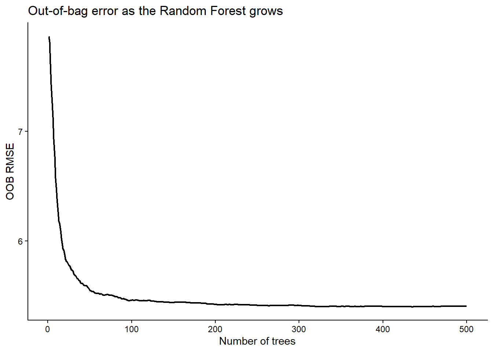
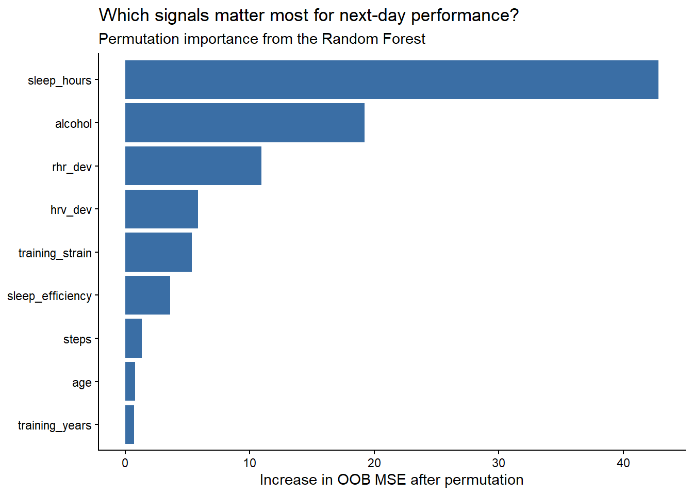
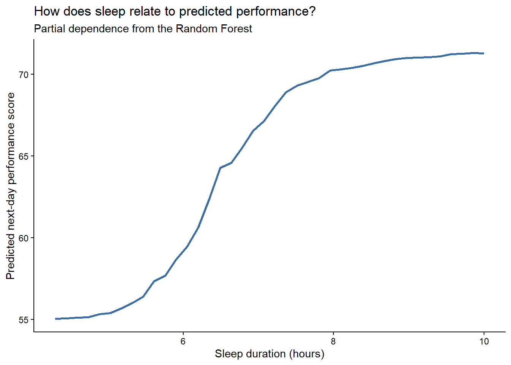
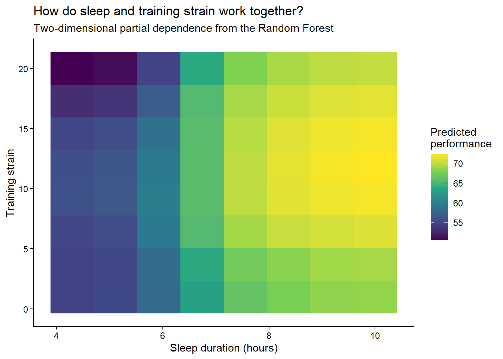

flowchart LR
A[Original training data]
A --> B[Bootstrap sample 1]
A --> C[Bootstrap sample 2]
A --> D[Bootstrap sample 3]
B --> E[Tree 1<br/>Random subset of predictors at each split]
C --> F[Tree 2<br/>Random subset of predictors at each split]
D --> G[Tree 3<br/>Random subset of predictors at each split]
E --> H[Combine predictions]
F --> H
G --> H
H --> I[Final prediction<br/>Average or class with most votes]
4 Random Forests
4.1 History and motivation
4.1.1 How Random Forest developed
| Year | Idea | What it added |
|---|---|---|
| 1984 | CART | Build a single classification or regression tree |
| 1996 | Bagging | Build many models using bootstrap samples and combine their predictions |
| 1998 | Random subspace method | Introduce randomness in which predictors models use |
| 2001 | Random Forest | Combine bagging with random predictor selection during tree construction |
4.1.2 Classification and Regression Trees
Classification and Regression Trees, commonly known as CART, are a type of decision-tree methodology used for predictive modeling in statistics and machine learning. The approach was formalized by Leo Breiman, Jerome Friedman, Richard Olshen and Charles Stone in their 1984 book Classification and Regression Trees. The idea is to split the data into subsets based on predictor values and create a tree-like structure in which each internal node represents a decision rule and each terminal, or leaf, node represents a prediction. In classification trees, the target variable is categorical, such as determining whether someone has obesity or not. In regression trees, the target variable is continuous, such as predicting muscle strength or heart rate.
CART builds a decision tree by repeatedly splitting the data into smaller groups. At each step, it evaluates candidate splits across the available predictors and selects the split that best separates the observations. For classification, the goal is to create nodes containing observations that increasingly belong to the same class, which can be quantified using measures such as Gini impurity, where lower values indicate greater purity. For regression, the goal is to make the outcome values within each resulting node as similar as possible, typically by selecting the split that produces the greatest reduction in residual sum of squares.
4.1.3 Bagging
Although CART provides an intuitive and flexible way to model nonlinear relationships, individual decision trees can be unstable: relatively small changes in the training data can produce substantially different trees. This instability motivated methods that combine multiple versions of a predictor rather than relying on a single fitted tree. In 1996, Breiman introduced bootstrap aggregating, or bagging, a method designed to improve the accuracy of unstable prediction procedures such as classification and regression trees.
Bagging repeatedly creates bootstrap samples from the original training dataset, fits the same prediction method to each sample and then combines the resulting predictions. For continuous outcomes, the predictions are averaged, and for classification problems the models vote for the predicted class. Because each bootstrap sample is drawn with replacement, the fitted trees differ from one another and aggregating them can produce a more stable predictor than a single tree.
4.1.4 Random subspace method
While bagging introduces randomness by resampling the observations, Ho (1998) introduced the Random Subspace Method, which adds randomness by training classifiers on different subsets of the available predictors. This provided another way to make the individual models within an ensemble (a collection of models whose predictions are combined) differ from one another.
4.1.5 Random Forest
Building on these ideas, Breiman (2001) introduced Random Forests, which combine bagging with random selection of predictors during tree construction.
In a Random Forest, many decision trees are built using different bootstrap samples of the original dataset. In addition, every time a tree makes a split, it only considers a random subset of the available predictors rather than all of them. This helps the trees become more different from one another, so they are less likely to make exactly the same mistakes.
Once all of the trees are built, their predictions are combined. For regression problems, the predictions from all trees are averaged. For classification problems, each tree votes for a class, and the class with the most votes becomes the final prediction. In this way, Random Forest uses many slightly different decision trees to produce a prediction that is generally more stable than the prediction from a single tree.
NoteThe main idea
A Random Forest builds many decision trees instead of relying on one tree.
Each tree is made slightly different by:
- training it on a different bootstrap sample of the observations, and
- allowing it to consider only a random subset of predictors at each split.
The predictions from all trees are then combined.
4.2 Mathematical formulation
Suppose we have a training dataset with \(n\) observations,
\[ \mathcal{D} = \{(\mathbf{x}_i, y_i)\}_{i=1}^{n}, \]
where \(i\) identifies the observation, \(\mathbf{x}_i\) contains its predictor values, and \(y_i\) is its observed outcome.
If there are \(p\) predictors, the predictor values for observation \(i\) can be written as
\[ \mathbf{x}_i = (x_{i1}, x_{i2}, \ldots, x_{ip}), \]
where \(p\) is the total number of predictors and \(x_{ij}\) represents predictor \(j\) for observation \(i\).
A Random Forest contains many decision trees. The prediction rule learned by tree \(k\) can be written as
\[ h(\mathbf{x}, \Theta_k), \]
where:
- \(h\) represents the prediction rule learned by the decision tree,
- \(\mathbf{x}\) represents the predictor values for the observation we want to predict,
- \(k\) identifies which tree in the forest we are referring to, and
- \(\Theta_k\) represents the random choices used to construct tree \(k\).
In other words, \(h(\mathbf{x}, \Theta_k)\) means that tree \(k\) takes the predictor values \(\mathbf{x}\) and produces a prediction.
Each tree is built using different random choices. In the Random Forest procedure described by Breiman (2001), this randomness comes mainly from two sources: a bootstrap sample of the training observations and a random subset of predictors considered when making each split.
Because the trees are built using different random choices, they can learn different decision rules and may produce different predictions for the same observation.
4.2.1 Bootstrap sampling
For each tree \(k\), a bootstrap training sample is created by sampling \(n\) observations from the original training data with replacement:
\[ \mathcal{D}_k^{*} \sim \text{Bootstrap}(\mathcal{D}) \]
Here, \(\mathcal{D}_k^{*}\) represents the bootstrap sample used to train tree \(k\).
Because sampling is performed with replacement, some observations may appear more than once in a bootstrap sample, while others may not appear at all.
A separate decision tree is then grown using each bootstrap sample.
4.2.2 Random predictor selection
When a tree reaches a node and needs to make a split, it does not consider all \(p\) predictors. Instead, a random subset of predictors is selected.
Let
\[ \mathcal{M}_{kj} \subset \{1,2,\ldots,p\} \]
represent the subset of predictors considered at node \(j\) of tree \(k\).
The number of predictors in this subset is
\[ |\mathcal{M}_{kj}| = m, \]
where \(m\) is the number of predictors randomly considered at each split and is usually smaller than \(p\).
The tree then selects the best split using only the predictors contained in \(\mathcal{M}_{kj}\).
A new random subset of predictors is selected at every node. This means that the same predictor can be selected or used at multiple nodes within the same tree, but it is not guaranteed to be available at every split.
This random predictor selection helps make the trees different from one another while still allowing each tree to find useful prediction rules.
4.2.3 Classification
For a classification problem, each tree predicts one class. The final Random Forest prediction is the class that receives the most votes across all trees:
\[ \hat{y} = \arg\max_c \sum_{k=1}^{K} I\left(h(\mathbf{x},\Theta_k)=c\right), \]
where:
- \(K\) is the total number of trees,
- \(c\) represents one of the possible outcome classes,
- \(h(\mathbf{x},\Theta_k)\) is the class predicted by tree \(k\),
- \(I(\cdot)\) is an indicator function that equals 1 when tree \(k\) predicts class \(c\) and 0 otherwise,
- \(\arg\max_c\) selects the class receiving the largest number of votes.
In simple terms, every tree gets one vote and the class with the most votes becomes the final prediction.
For example, if five trees predict
\[ \text{Yes},\ \text{Yes},\ \text{No},\ \text{Yes},\ \text{No} \]
then the final Random Forest prediction is
\[ \hat{y} = \text{Yes}. \]
4.2.4 Regression
For a regression problem, each tree produces a numerical prediction. The final Random Forest prediction is the average of the predictions from all \(K\) trees:
\[ \hat{y} = \frac{1}{K} \sum_{k=1}^{K} h(\mathbf{x},\Theta_k), \]
where:
- \(\hat{y}\) is the final Random Forest prediction,
- \(K\) is the total number of trees in the forest,
- \(k\) identifies a specific tree,
- \(h(\mathbf{x},\Theta_k)\) is the numerical prediction made by tree \(k\) for an observation with predictor values \(\mathbf{x}\),
- \(\sum_{k=1}^{K}\) means that the predictions from Tree 1 through Tree \(K\) are added together, and
- \(\frac{1}{K}\) divides this total by the number of trees, giving the average prediction.
In simple terms, each tree makes its own numerical prediction, and the Random Forest takes the average of all of them.
For example, if three trees predict
\[ 200,\ 220,\ 210 \]
then the Random Forest prediction is
\[ \hat{y} = \frac{200+220+210}{3} = 210. \]
4.2.5 Putting the model together
The Random Forest procedure can therefore be summarized as follows:
- Create a bootstrap sample of the training observations for each tree.
- Grow a decision tree using that bootstrap sample.
- At every split, randomly select a subset of the available predictors.
- Choose the best split from that subset.
- Repeat the process to create many different trees.
- Combine the predictions from all trees by selecting the class with the most votes for classification or averaging the predictions for regression.
The added randomness helps make the trees less similar to one another, which makes combining their predictions more useful.
4.2.6 Out-of-bag observations
Bootstrap sampling also provides a useful way to evaluate the Random Forest without creating a separate validation set for every tree.
Because each tree is trained on a bootstrap sample drawn with replacement, some observations from the original training dataset are not selected for that tree. These observations are called out-of-bag (OOB) observations.
For a given observation, its OOB prediction is obtained using only the trees for which that observation was not included in the bootstrap sample. Because those trees did not use the observation during training, the OOB prediction can be used to estimate how well the forest performs on unseen data.
For regression, OOB predictions can be used to calculate measures such as RMSE and \(R^2\). For classification, they can be used to estimate classification error.
4.3 Computational demonstration
For this computational exploration, I wanted to work with an example that is directly related to my field of exercise physiology and human-performance analytics. Rather than using a generic dataset, I will use a simulated wearable-style dataset to explore whether sleep, training, physiological recovery, and lifestyle behaviors can predict next-day performance.
4.3.1 Case study: Predicting next-day performance
For this example, I created a simulated wearable-style dataset in which each observation represents one person on one day. The goal is to predict a Next-Day Performance Score ranging from 0 to 100, where higher values represent better expected next-day performance.
The predictors include sleep, physiological signals relative to personal baseline, previous-day training strain, general activity, alcohol intake, training experience, and age.
The simulated relationships are intentionally not all linear. For example, the benefit of additional sleep begins to level off once adequate sleep is reached, while high training strain may be more detrimental when combined with short sleep. This makes the example well suited to Random Forest, which can capture nonlinear relationships and interactions without requiring them to be specified in advance.
| Variable | Description |
|---|---|
sleep_hours |
Previous night’s sleep duration |
sleep_efficiency |
Percentage of time in bed spent asleep |
hrv_dev |
HRV percentage deviation from personal baseline |
rhr_dev |
Resting heart rate percentage deviation from personal baseline |
training_strain |
Previous-day training strain |
steps |
Previous-day step count |
alcohol |
Number of alcoholic drinks consumed |
training_years |
Years of regular training |
age |
Age in years |
performance_score |
Next-day performance score from 0 to 100 |
4.3.2 Simulating the wearable dataset
To make the example resemble a realistic wearable-data setting, I simulated repeated daily observations from 160 individuals over 14 days, resulting in 2,240 person-day observations.
Some characteristics remain constant for each individual across the observation period, including age and years of training experience. Other variables change from day to day, including sleep duration, sleep efficiency, training strain, step count, alcohol intake, HRV deviation from personal baseline, and resting heart rate deviation from personal baseline.
The daily variables are not generated completely independently. Instead, some relationships are built into the simulation to reflect patterns that might reasonably occur in wearable data. For example, alcohol intake and higher training strain can reduce sleep duration, while sleep, alcohol, and training strain can also influence HRV and resting heart rate relative to an individual’s usual baseline.
The outcome, performance_score, is then generated from these predictors using a known combination of nonlinear effects and interactions. Because the true data-generating process is known, we can later examine whether the Random Forest is able to recover the patterns that were intentionally built into the data.
The specific distributions, coefficients, and thresholds used here are illustrative simulation choices rather than estimates derived from empirical data.
Show code
library(tidyverse)
set.seed(2026)
n_people <- 160
n_days <- 14
# Create person-level characteristics
people <- tibble(
id = 1:n_people,
age = pmin(
pmax(rnorm(n_people, mean = 32, sd = 8), 18),
55
),
training_years = pmin(
pmax(
(age - 18) * 0.35 + rnorm(n_people, mean = 2.5, sd = 2.5),
0
),
20
)
)
# Create repeated daily observations for each person
wearable_data <- expand_grid(
people,
day = 1:n_days
) |>
mutate(
# Previous-day training strain
training_strain = pmin(
rgamma(n(), shape = 4, scale = 2.5),
20
),
# Most days have no alcohol consumption
alcohol = if_else(
runif(n()) < 0.72,
0,
pmin(rpois(n(), lambda = 1.2) + 1, 5)
),
# Sleep duration is slightly affected by strain and alcohol
sleep_hours = pmin(
pmax(
rnorm(
n(),
mean = 7.3 -
0.18 * alcohol -
0.015 * training_strain,
sd = 0.85
),
4
),
10
),
# Sleep efficiency
sleep_efficiency = pmin(
pmax(
rnorm(
n(),
mean = 87 +
1.5 * (sleep_hours - 7.2) -
1.6 * alcohol,
sd = 4
),
65
),
99
),
# General daily activity
steps = pmin(
pmax(
rnorm(
n(),
mean = 7000 + 450 * training_strain,
sd = 2200
),
1500
),
25000
),
# HRV deviation from personal baseline
hrv_dev = pmin(
pmax(
rnorm(
n(),
mean = 1.5 * (sleep_hours - 7.2) -
1.4 * alcohol -
0.22 * (training_strain - 10),
sd = 6
),
-30
),
30
),
# Resting heart rate deviation from personal baseline
rhr_dev = pmin(
pmax(
rnorm(
n(),
mean = -0.8 * (sleep_hours - 7.2) +
1.6 * alcohol +
0.25 * (training_strain - 10),
sd = 2.5
),
-10
),
20
)
)The first step creates the predictor variables for each person-day. Next, I generate performance_score using a known data-generating process that includes nonlinear relationships and interactions.
Show code
wearable_data <- wearable_data |>
mutate(
performance_score =
65 +
# Sleep improves performance, but the benefit plateaus
10 * tanh((sleep_hours - 6.2) / 1.2) +
# Higher sleep efficiency is modestly beneficial
0.12 * (sleep_efficiency - 85) +
# Physiological signals relative to baseline
0.28 * hrv_dev -
0.55 * rhr_dev -
# Alcohol lowers expected next-day performance
2.5 * alcohol -
# Very high or very low strain is less favorable
0.10 * (training_strain - 10)^2 -
# High strain becomes more detrimental when sleep is short
0.90 *
pmax(training_strain - 13, 0) *
pmax(7 - sleep_hours, 0) +
# Training experience slightly improves tolerance to high strain
0.12 *
training_years *
pmax(training_strain - 13, 0) -
# Small age effect
0.08 * (age - 32) +
# Unexplained day-to-day variation
rnorm(n(), mean = 0, sd = 5),
# Keep the score between 0 and 100
performance_score = pmin(
pmax(performance_score, 0),
100
)
)In simple terms, the simulated data-generating process calculates next-day performance as:
\[ \begin{aligned} \text{Performance} =\;& 65 \\ &+ \text{nonlinear sleep effect} \\ &+ \text{sleep efficiency} \\ &+ \text{HRV effect} \\ &- \text{resting HR effect} \\ &- \text{alcohol effect} \\ &- \text{strain penalty} \\ &- \text{high strain} \times \text{short sleep penalty} \\ &+ \text{training experience} \times \text{high strain buffer} \\ &- \text{small age effect} \\ &+ \text{random noise}. \end{aligned} \]
This is the hidden process used to generate the simulated outcome. The Random Forest is not given this equation. It must learn these relationships from the data.
The predictors were generated using different probability distributions and dependency structures to create variation across individuals and days while keeping values within plausible ranges. The main simulation choices are summarized below.
| Variable | How it was generated | Approximate center / range |
|---|---|---|
| Age | Normal distribution | Mean 32 years, SD 8; restricted to 18–55 |
| Training experience | Related to age with added random variation | Restricted to 0–20 years |
| Training strain | Gamma distribution | Mean ≈ 10; maximum 20 |
| Alcohol | 72% of days set to 0; otherwise generated from a Poisson-based count | 0–5 drinks |
| Sleep duration | Normal distribution depending on alcohol and training strain | Around 7.3 h; restricted to 4–10 h |
| Sleep efficiency | Normal distribution depending on sleep duration and alcohol | Around 87%; restricted to 65–99% |
| Steps | Normal distribution increasing with training strain | Around 7,000 + 450 × strain; restricted to 1,500–25,000 |
| HRV deviation | Normal distribution depending on sleep, alcohol, and training strain | Restricted to −30% to +30% |
| Resting HR deviation | Normal distribution depending on sleep, alcohol, and training strain | Restricted to −10% to +20% |
Below is a summary of the simulated dataset:
Show code
dataset_summary <- tibble(
Characteristic = c(
"Individuals",
"Days per individual",
"Total person-day observations",
"Predictor variables",
"Outcome"
),
Value = c(
"160",
"14",
"2,240",
"9",
"Next-Day Performance Score (0–100)"
)
)
knitr::kable(
dataset_summary,
caption = "Structure of the simulated wearable dataset"
)| Characteristic | Value |
|---|---|
| Individuals | 160 |
| Days per individual | 14 |
| Total person-day observations | 2,240 |
| Predictor variables | 9 |
| Outcome | Next-Day Performance Score (0–100) |
And an example of the observations from the simulated dataset:
Show code
wearable_data |>
select(
id,
day,
sleep_hours,
sleep_efficiency,
hrv_dev,
rhr_dev,
training_strain,
steps,
alcohol,
performance_score
) |>
slice_head(n = 8) |>
knitr::kable(
digits = 1,
caption = "Example observations from the simulated wearable dataset"
)| id | day | sleep_hours | sleep_efficiency | hrv_dev | rhr_dev | training_strain | steps | alcohol | performance_score |
|---|---|---|---|---|---|---|---|---|---|
| 1 | 1 | 7.5 | 89.7 | -8.7 | 6.1 | 19.0 | 18392.1 | 2 | 61.5 |
| 1 | 2 | 7.6 | 85.0 | 7.4 | 1.1 | 9.7 | 9721.4 | 0 | 78.5 |
| 1 | 3 | 7.4 | 83.7 | -6.8 | 0.4 | 7.2 | 9103.8 | 0 | 74.0 |
| 1 | 4 | 7.9 | 93.5 | -9.8 | -0.7 | 8.8 | 16723.1 | 0 | 61.5 |
| 1 | 5 | 7.3 | 88.8 | 0.0 | 1.1 | 7.0 | 10523.6 | 0 | 73.6 |
| 1 | 6 | 6.6 | 95.1 | -8.5 | 1.9 | 14.5 | 11390.3 | 0 | 72.5 |
| 1 | 7 | 5.7 | 88.8 | -3.2 | 0.5 | 7.8 | 9262.2 | 0 | 63.2 |
| 1 | 8 | 6.7 | 86.9 | 2.0 | -3.3 | 9.2 | 10906.9 | 0 | 72.4 |
Each row represents one individual on one day. The predictors describe the person’s recent sleep, training, activity, lifestyle behavior, and physiological state, while performance_score represents their expected next-day performance on a 0–100 scale.
4.3.3 Fitting the Random Forest regression model
The outcome, performance_score, is continuous, so I fit a Random Forest regression model. The model uses the nine sleep, training, physiological, and lifestyle variables as predictors.
I use 500 trees and allow three randomly selected predictors to be considered at each split. With nine predictors in total, this means that each node considers only a subset of the available information when choosing its best split.
Show code
library(randomForest)
# Keep only the variables used in the model
rf_data <- wearable_data |>
select(
performance_score,
sleep_hours,
sleep_efficiency,
hrv_dev,
rhr_dev,
training_strain,
steps,
alcohol,
training_years,
age
)
set.seed(2026)
# Fit a Random Forest regression model
rf_model <- randomForest(
performance_score ~ .,
data = rf_data,
ntree = 500,
mtry = 3,
importance = TRUE
)In the model above:
performance_score ~ .tells R to predictperformance_scoreusing all other variables inrf_data.ntree = 500grows 500 different decision trees.mtry = 3means that three randomly selected predictors are allowed to compete at each split.importance = TRUEstores information that can later be used to examine which predictors were most useful to the forest.
Each tree is still trained on its own bootstrap sample, so the model combines both sources of randomness described earlier: resampling observations and randomly selecting predictors at each split.
Show code
model_summary <- tibble(
`Model` = "Random Forest regression",
`Number of trees` = rf_model$ntree,
`Predictors per split` = rf_model$mtry,
`OOB RMSE` = sqrt(tail(rf_model$mse, 1)),
`OOB R²` = tail(rf_model$rsq, 1)
)
knitr::kable(
model_summary,
digits = 2,
caption = "Random Forest model summary"
)| Model | Number of trees | Predictors per split | OOB RMSE | OOB R² |
|---|---|---|---|---|
| Random Forest regression | 500 | 3 | 5.4 | 0.71 |
The fitted model achieved an OOB RMSE of approximately 5.4 points and an OOB \(R^2\) of 0.71. This means that the model explained about 71% of the variation in the simulated next-day performance scores using predictions from observations that were out-of-bag.
4.3.4 Does the forest stabilize?
As more trees are added to a Random Forest, the out-of-bag prediction error should eventually approach a stable level. I can examine this by tracking the OOB RMSE as the number of trees increases.
Show code
# Track OOB RMSE as trees are added to the forest
oob_error <- tibble(
trees = 1:rf_model$ntree,
oob_rmse = sqrt(rf_model$mse)
)
ggplot(oob_error, aes(x = trees, y = oob_rmse)) +
geom_line(linewidth = 0.8) +
labs(
title = "Out-of-bag error as the Random Forest grows",
x = "Number of trees",
y = "OOB RMSE"
) +
theme_classic()
The OOB RMSE decreased rapidly as the first trees were added and then stabilized, indicating that 500 trees were more than sufficient for the forest to reach a stable level of predictive performance.
4.4 Visualizing the prediction relationship
Unlike a single decision tree, a Random Forest contains hundreds of different trees, so there is no single set of splits or coefficients that completely describes the fitted model. I therefore use several complementary visualizations to examine what the forest learned.
4.4.1 Which predictors mattered most?
I first use permutation importance to examine which predictors the forest relied on most. For each predictor, its values are randomly shuffled and the resulting change in prediction error is measured. A larger increase in error indicates that the predictor contributed more to the model’s predictions.
Show code
# Extract permutation importance based on the increase in OOB MSE
importance_values <- importance(
rf_model,
type = 1,
scale = FALSE
) |>
as.data.frame() |>
rownames_to_column("predictor") |>
rename(importance = `%IncMSE`) |>
arrange(importance)
ggplot(
importance_values,
aes(x = reorder(predictor, importance), y = importance)
) +
geom_col(fill = "#3A6EA5") +
coord_flip() +
labs(
title = "Which signals matter most for next-day performance?",
subtitle = "Permutation importance from the Random Forest",
x = NULL,
y = "Increase in OOB MSE after permutation"
) +
theme_classic()
Sleep duration was the most influential predictor in the fitted forest, followed by alcohol intake and resting heart rate deviation. In contrast, step count, age, and training experience contributed relatively little to the model’s predictive accuracy.
4.4.2 How does sleep duration relate to predicted performance?
Permutation importance showed that sleep duration was the most influential predictor, but it does not tell us the shape of that relationship. I therefore use a partial dependence plot (PDP) to examine how the Random Forest’s predicted performance changes across different amounts of sleep.
The partial dependence plot varies sleep duration while averaging the model’s predictions over the other predictors in the dataset.
Show code
library(pdp)
# Estimate the average prediction relationship for sleep duration
sleep_pdp <- partial(
rf_model,
pred.var = "sleep_hours",
train = rf_data,
grid.resolution = 40
)
ggplot(sleep_pdp, aes(x = sleep_hours, y = yhat)) +
geom_line(
color = "#3A6EA5",
linewidth = 1
) +
labs(
title = "How does sleep relate to predicted performance?",
subtitle = "Partial dependence from the Random Forest",
x = "Sleep duration (hours)",
y = "Predicted next-day performance score"
) +
theme_classic()
Predicted next-day performance increased sharply as sleep duration rose from about 5 to 8 hours, after which the relationship began to plateau.
4.4.3 Do sleep and training strain interact?
A one-dimensional partial dependence plot shows the average relationship between one predictor and the model’s predictions, but Random Forest can also learn interactions between predictors.
Because the simulated outcome was designed so that high training strain is more detrimental when sleep is short, I next examine the joint partial dependence of sleep duration and training strain.
Show code
# Examine the joint prediction relationship between sleep and training strain
sleep_strain_pdp <- partial(
rf_model,
pred.var = c("sleep_hours", "training_strain"),
train = rf_data,
grid.resolution = 8
)
ggplot(
sleep_strain_pdp,
aes(
x = sleep_hours,
y = training_strain,
fill = yhat
)
) +
geom_tile() +
scale_fill_viridis_c(
name = "Predicted\nperformance"
) +
labs(
title = "How do sleep and training strain work together?",
subtitle = "Two-dimensional partial dependence from the Random Forest",
x = "Sleep duration (hours)",
y = "Training strain"
) +
theme_classic()
The Random Forest recovered the expected nonlinear pattern: predicted performance improved as sleep increased and then began to plateau. High training strain was especially unfavorable when sleep was short, indicating that the forest learned the sleep-by-strain interaction built into the simulated data.
4.5 Special considerations
Several features of Random Forest should be considered when fitting and interpreting the model:
- Number of trees: Enough trees should be grown for prediction error to stabilize. Beyond that point, additional trees mainly increase computation rather than substantially changing predictions.
- Number of predictors per split: Smaller values increase diversity among trees, whereas larger values allow each tree to consider more information at each split. This parameter can be tuned for prediction performance.
- Variable importance: Permutation importance can be harder to interpret when predictors are strongly correlated because multiple variables may contain overlapping information.
- Out-of-bag evaluation: OOB error provides a convenient internal estimate of prediction performance. However, for repeated-measures data such as wearable observations collected from the same individuals, validation should ideally account for clustering by person if the goal is to predict performance in new individuals.
4.6 References
Breiman, L. (1996). Bagging predictors. Machine Learning, 24, 123–140. https://doi.org/10.1007/BF00058655
Breiman, L. (2001). Random forests. Machine Learning, 45, 5–32. https://doi.org/10.1023/A:1010933404324
Breiman, L., Friedman, J. H., Olshen, R. A., & Stone, C. J. (1984). Classification and regression trees. Wadsworth & Brooks/Cole.
Ho, T. K. (1998). The random subspace method for constructing decision forests. IEEE Transactions on Pattern Analysis and Machine Intelligence, 20(8), 832–844. https://doi.org/10.1109/34.709601
4.7 AI Acknowledgment
OpenAI ChatGPT (GPT-5.6 Sol) was used during the development of this tutorial to support conceptual understanding & code development and provide feedback on clarity and wording. The final analysis, interpretation, code, and written content were reviewed and understood by the author.